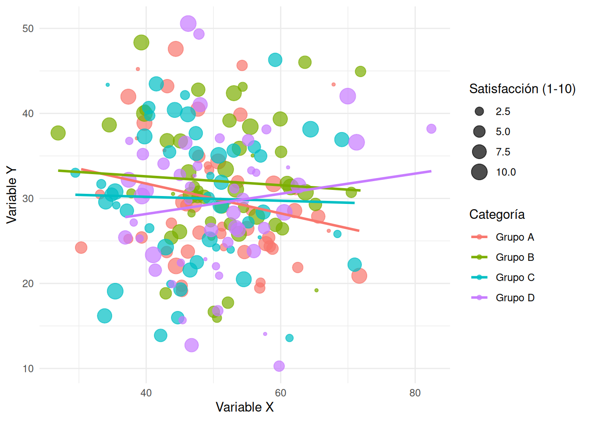

# Este es un chunk de código en R
x <- 1
y <- 2^2
z = x + y
z[1] 5Correspondiente a la sesión del jueves, 2 de abril de 2026
Antes de comenzar con el práctico, repasemos algunos conceptos fundamentales sobre markdown. Markdown es un lenguaje de marcado ligero que permite formatear texto de manera sencilla y legible. Es ampliamente utilizado en la escritura de documentos, blogs, y especialmente en la creación de contenido para la web. En el contexto de este curso, utilizaremos markdown para escribir nuestros documentos en Quarto, lo que nos permitirá integrar fácilmente nuestras referencias bibliográficas utilizando Zotero.
En markdown, podemos utilizar diferentes marcas de edición para dar formato a nuestro texto. Algunas de las más comunes incluyen:
Encabezados: Se crean utilizando el símbolo # seguido del texto del encabezado. Por ejemplo, # Encabezado 1 para un encabezado de nivel 1, ## Encabezado 2 para un encabezado de nivel 2, y así sucesivamente. Los encabezados siguen una estructura jerárquica, lo que nos permite organizar nuestro documento de manera clara y ordenada.
Negrita: Para resaltar texto en negrita, se utilizan dos asteriscos ** antes y después del texto. Por ejemplo, **texto en negrita** se renderizará como texto en negrita.
Cursiva: Para resaltar texto en cursiva, se utiliza un asterisco * antes y después del texto. Por ejemplo, *texto en cursiva* se renderizará como texto en cursiva.
Listas: Para crear listas, se pueden utilizar guiones - o asteriscos * para listas no ordenadas, y números seguidos de un punto para listas ordenadas. Por ejemplo:
Enlaces: Para crear enlaces, se utiliza la sintaxis [texto del enlace](URL). Por ejemplo, [Google](https://www.google.com) se renderizará como Google.
Imágenes: Para insertar imágenes, se utiliza la sintaxis . Por ejemplo,  se renderizará como 
La renderización de markdown se refiere al proceso de conversión del texto a un formato visualmente atractivo y legible. En el contexto de Quarto, cuando escribimos nuestro documento en markdown, al renderizarlo, se convierte en un documento HTML o PDF que muestra el formato aplicado a través de las marcas de edición. Esto nos permite ver nuestros encabezados, listas, enlaces, imágenes y otros elementos formateados correctamente, facilitando la lectura y comprensión del contenido.
Esto se puede representar en el siguiente esquema:

Pandoc es la herramienta que se encarga de realizar esta conversión de markdown a HTML o PDF, permitiéndonos visualizar nuestro documento con el formato deseado. Este programa funciona como un puente entre el texto plano que escribimos en markdown y el documento final que se renderiza, asegurando que todas las marcas de edición se apliquen correctamente para una presentación óptima.
En VSCode, podemos escribir en markdown utilizando la extensión “Markdown Preview enhanced”. Esta extensión nos permite escribir en markdown y ver una vista previa de cómo se renderizará nuestro documento. Para instalarla, simplemente debemos ir a la sección de extensiones en VSCode, buscar “Markdown Preview enhanced” y hacer click en instalar. Una vez instalada, podemos abrir un archivo con extensión .md o .qmd y utilizar la función de preview para ver cómo se renderiza nuestro documento en tiempo real.
Cree un archivo Quarto
Piense una estructura anidada de contenidos utilizando los encabezados
Escriba un texto de aproximadamente 100 palabras utilizando las marcas de edición enseñadas para dar formato al texto (negrita, cursiva, listas)
Inserte al menos un enlace y una imagen a lo largo del documento.
Renderice el documento y confirme que se aplica el formato de salida.
Los documentos dinámicos son un archivo que integra texto, código y resultados de un análisis, lo que permite que cualquier cambio en los datos se actualice automáticamente en el documento final. Este formato ayuda a disminuir errores manuales, reduce el tiempo de edición y asegura la reproducibilidad, ya que el documento no sólo muestra resultados, sino que los genera directamente. Por ello, se ha vuelto fundamental en contextos como la ciencia abierta, la docencia, los reportes periódicos y el trabajo colaborativo.
La base de los documentos dinámicos son Markdown, permitiendo crear documentos legibles para humanos, procesables por máquinas y exportables a múltiples formatos (informes, artículos, presentaciones o sitios web).
El potencial de los documentos dinámicos puede ser aprovechado al máximo con Quarto, un sistema moderno de publicación que se caracteriza por su multifuncionalidad y facilidad de uso.
Ventajas de usar Quarto:
Está basado en Markdown: conserva la lógica de texto plano con marcas mínimas.
Soporte para múltiples lenguajes (R, Python, Julia, etc)
Multitud de formatos de salida (HTML, PDF, Shiny, etc) gracias a Pandoc
Soporte para publicación científica: integración con bibliografías, citaciones, Zotero
Los documentos dinámicos en Quarto tienen dos secciones principales: el YAML y el cuerpo del documento.
--- al principio y al final. En esta sección se pueden definir el título, autor, fecha, formato de salida y otras opciones. Todo lo que se defina en el YAML afectará a la totalidad del documento.Ejemplo de YAML:
---
title: "Práctico 03"
author: "Curso Ciencia Abierta"
format: html
date: "2026-04-02"
---El YAML es altamente sensible a la sintaxis, por lo que es importante asegurarse de que esté correctamente escrito para evitar errores en la renderización del documento.
Al escribir código en un documento dinámico, se utilizan los llamados chunks o trozos de código. Estos bloques permiten insertar código en diferentes lenguajes de programación (como R, Python, Julia, etc.) dentro del documento.
Ctrl + Shift + I (o Cmd + Option + I en Mac) y seleccionar el lenguaje de programación que deseas utilizar. Esto insertará un bloque de código con la sintaxis adecuada para ese lenguaje.El chunk en el documento se verá así:
```{r}
```Si escribes código por fuera de un chunk, el sistema lo interpretará como texto plano.
Dentro de un chunk no todo es código. Puedes escribir texto plano siempre y cuando se anteponga un # al texto.
Veamos un ejemplo de código en R dentro de un chunk:
# Este es un chunk de código en R
x <- 1
y <- 2^2
z = x + y
z[1] 5Un chunk tiene una serie de opciones que permiten controlar su comportamiento y la forma en que se visualizan el código y el resultado. Las opciones de chunk se especifican en la parte superior antes de escribir código, y deben anotarse con el prefijo #|.
Algunas de las opciones de chunk más comunes incluyen:
| Opción | Descripción |
|---|---|
| eval | Evalúa la ejecución del bloque de código. |
| echo | Incluye el código fuente en la salida. |
| warning | Incluye las advertencias en la salida. |
| error | Incluye los errores en la salida (esto implica que los errores al ejecutar el código no detendrán el procesamiento del documento). |
| include | Opción general para evitar que cualquier salida (código o resultados) sea incluida (por ejemplo, include: false suprime toda la salida del bloque de código). |
En los documentos dinámicos, es posible referenciar los resultados que están dentro de los chunks ajustando sus opciones.
Veamos un ejemplo de cómo referenciar un resultado:
#| label: fig-ejemplo
#| fig-cap: "Gráfico de ejemplo con datos ficticios"
#| fig-cap-location: bottom
# Cargar librerías necesarias
library(ggplot2)
library(dplyr)
# Crear datos ficticios
set.seed(123) # Para reproducibilidad
datos_ejemplo <- data.frame(
categoria = rep(c("Grupo A", "Grupo B", "Grupo C", "Grupo D"), each = 50),
valor_x = rnorm(200, mean = 50, sd = 10),
valor_y = rnorm(200, mean = 30, sd = 8),
satisfaccion = sample(1:10, 200, replace = TRUE)
)
# Crear el gráfico
ggplot(datos_ejemplo, aes(x = valor_x, y = valor_y, color = categoria)) +
geom_point(aes(size = satisfaccion), alpha = 0.7) +
geom_smooth(method = "lm", se = FALSE) +
labs(
x = "Variable X",
y = "Variable Y",
color = "Categoría",
size = "Satisfacción (1-10)"
) +
theme_minimal() #| label Le asigna una etiqueta al chunk. Si el chunk genera un gráfico como output, la etiqueta debe tener el prefijo fig- para que pueda ser referenciada correctamente. En cambio, si se genera una tabla, el nombre de la etiqueta debe llevar el prefijo tbl-.
#| fig-caption Permite agregar un título o leyenda al output.
#| fig-cap-location Define la ubicación de la leyenda del output.
Al renderizar, este código se ve así:
# Cargar librerías necesarias
library(ggplot2)
library(dplyr)
Attaching package: 'dplyr'The following objects are masked from 'package:stats':
filter, lagThe following objects are masked from 'package:base':
intersect, setdiff, setequal, union# Crear datos ficticios
set.seed(123) # Para reproducibilidad
datos_ejemplo <- data.frame(
categoria = rep(c("Grupo A", "Grupo B", "Grupo C", "Grupo D"), each = 50),
valor_x = rnorm(200, mean = 50, sd = 10),
valor_y = rnorm(200, mean = 30, sd = 8),
satisfaccion = sample(1:10, 200, replace = TRUE)
)
# Crear el gráfico
ggplot(datos_ejemplo, aes(x = valor_x, y = valor_y, color = categoria)) +
geom_point(aes(size = satisfaccion), alpha = 0.7) +
geom_smooth(method = "lm", se = FALSE) +
labs(
x = "Variable X",
y = "Variable Y",
color = "Categoría",
size = "Satisfacción (1-10)"
) +
theme_minimal() `geom_smooth()` using formula = 'y ~ x'
El output del código es bastante largo, así que añadamos un par de opciones más para que la salida sea más limpia:
#| label: fig-ejemplo-2
#| fig-cap: "Gráfico de ejemplo con datos ficticios"
#| fig-cap-location: bottom
#| echo: false
#| warning: false
# Cargar librerías necesarias
library(ggplot2)
library(dplyr)
# Crear datos ficticios
set.seed(123) # Para reproducibilidad
datos_ejemplo <- data.frame(
categoria = rep(c("Grupo A", "Grupo B", "Grupo C", "Grupo D"), each = 50),
valor_x = rnorm(200, mean = 50, sd = 10),
valor_y = rnorm(200, mean = 30, sd = 8),
satisfaccion = sample(1:10, 200, replace = TRUE)
)
# Crear el gráfico
ggplot(datos_ejemplo, aes(x = valor_x, y = valor_y, color = categoria)) +
geom_point(aes(size = satisfaccion), alpha = 0.7) +
geom_smooth(method = "lm", se = FALSE) +
labs(
x = "Variable X",
y = "Variable Y",
color = "Categoría",
size = "Satisfacción (1-10)"
) +
theme_minimal() Este código renderizado es ve así:

Podemos observar que se eliminan todas las líneas de código y las advertencias, dejando únicamente el gráfico con su leyenda. Esto facilita la lectura del documento, especialmente cuando el código es largo o genera muchas advertencias que no son relevantes para el lector.
Para referenciar una figura en el cuerpo del documento, hay que escribirlo de la siguiente manera: @ + label. Entonces, para referenciar la última figura debemos escribir: “Tal como se ve en la @fig-ejemplo-2”.
Al renderizarse, esto se ve así: “Tal como se ve en la Figura 2”.
Dos chunks distintos no pueden tener el mismo label. La etiqueta opera como una marca de referencia del código, por lo que cada chunk debe tener un label único para evitar conflictos al referenciar los resultados.
Otra de las ventajas de los documentos dinámicos es que son completamente personalizables. Quarto ofrece una amplia variedad de temas que permiten cambiar la apariencia de nuestros documentos de manera sencilla. Para aplicar un tema, simplemente debemos agregar la opción theme en el YAML de nuestro documento, seguida del nombre del tema que deseamos utilizar.
---
title: "Práctico 03"
author: "Curso Ciencia Abierta"
format: html
theme: united
date: "2026-04-02"
---Además de los temas predefinidos, también es posible personalizar la apariencia de nuestros documentos utilizando CSS (Cascading Style Sheets). Para ello, podemos crear un archivo CSS con las reglas de estilo que deseamos aplicar y luego vincularlo en el YAML de nuestro documento utilizando la opción theme.
También existen los archivos SCSS (Sacy CSS) que son una extensión de CSS que permite utilizar variables, anidamiento y otras funcionalidades avanzadas para facilitar la escritura de estilos personalizados. Esencialmente, cumple la misma función que un archivo CSS.
Existen varias opciones adicionales que se pueden configurar en el YAML para personalizar aún más nuestros documentos dinámicos. Algunas de estas opciones son:
toc: Permite generar una tabla de contenidos automáticamente a partir de los encabezados del documento. Para habilitar esta opción, simplemente debemos agregar toc: true en el YAML.
number-sections: Esta opción permite numerar automáticamente los encabezados del documento. Se activa al agregar number-sections: true en el YAML.
title-block-banner: Añade un banner de fondo al título del documento. Para que funcione, debemos agregar title-block-banner: true en el YAML.
code-fold: Vuelve opcional la visualización de los bloques de código para mejorar la legibilidad del documento. Esto se activa agregando code-fold: true en el YAML.
La indentación es la técnica de añadir espacios o tabulaciones al inicio de una línea de código para mejorar su legibilidad y estructura jerárquica. Este suele aplicarse en el YAML para organizar las opciones de manera clara y evitar errores de sintaxis.
Ejemplo:
---
title: "Práctico 03"
author: "Curso Ciencia Abierta"
format:
html:
theme:
- united
- ejemplo.scss
date: "2026-04-02"
---Un YAML que contenga al menos título, autor, fecha y formato de salida (idealmente HTML)
Dos secciones principales y, al menos, una subsección anidada dentro de cada sección general
Un texto en cada sección creada con los encabezados que contenga marcas de edición
Un enlace y una imagen en alguna parte del cuerpo
Una figura (con datos reales o ficticios) generada a través de un chunk de código con su respectiva leyenda y referencia en el cuerpo del documento.
Renderice y corrobore que se procesan correctamente las marcas de texto y el código
Cambie el tema del documento por uno de los temas Quarto
Añada al menos 2 opciones de visualización del documento en el YAML (se puede guiar por las que se dieron de ejemplo)
Bonus: Integre un tema Quarto a elección y el archivo SCSS de ejemplo en su YAML para personalizar aún más la apariencia de su documento.